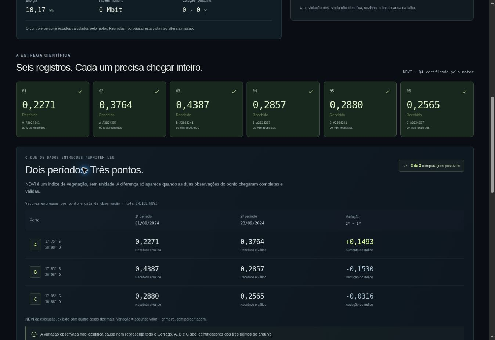

Necessidade antes da peça
O briefing liga finalidade, operação e critério de entrega.
Consultar a fontePROJETO-IPÊ
Um jogo educativo para entender como decisões de projeto mudam a entrega de uma missão espacial.

Fontes externas ajudam a formular decisões. A eficácia deste jogo ainda precisa ser investigada com pessoas.
O briefing liga finalidade, operação e critério de entrega.
Consultar a fonteA reflexão convida a apoiar uma escolha em um evento ou valor observado.
Consultar a fonteFeedback explica o ocorrido e permite investigar e redesenhar.
Consultar a fonteAplicações autorais das referências. Sem afiliação ou endosso NASA/NN/g. Os personagens e a nave são fictícios.
“O PROJETO-IPÊ permite projetar uma missão fictícia e explicar, com evidências, por que a ciência chegou ao solo.” Apresente o objetivo antes da tecnologia. As fontes dão base às escolhas, mas não validam o produto. Tempo sugerido: 45 segundos. Roteiro: slides 1 e 3.
Estudar os pitches de 30 s, 90 s e 3 minUma bateria maior, um rádio mais rápido ou um dado produzido não garantem a entrega. O desafio é relacionar partes e explicar o comportamento do sistema.
“O que devo mudar
e que evidência
sustenta essa decisão?”
A necessidade é uma hipótese de produto baseada na pesquisa documental e no domínio. Ainda não há entrevistas ou estudo próprio com participantes.
Registrar o que espera antes de conhecer o resultado.
Testar uma configuração em condições explícitas.
Localizar o evento que explica a consequência.
Escolher uma mudança e testar uma nova hipótese.
Estudantes e pessoas iniciantes em engenharia espacial, com educadores e facilitadores. Linguagem e autonomia de uso precisam de observação.
Evite afirmar que “os estudantes não entendem” como resultado de pesquisa já feita. Diga: “Queremos investigar se observar consequências ajuda a explicar as relações.” Use a distinção W/Wh somente se a audiência pedir um exemplo. Roteiro: slide 2.
A mesma meta científica, com necessidades de engenharia diferentes. Toda conclusão exige 6/6 completos e válidos, sucesso do motor e uma execução própria.
O pacote histórico está pronto. O primeiro ensaio acompanha cada lote até o solo e relaciona uma montagem ao resultado.
“Qual é a diferença entre produzir um lote e disponibilizar sua ciência?”
Uma primeira experiência de sucesso. A investigação verifica como a entrega aconteceu.
Bateria de 16 Wh, painel de 18 W, bandas, rádio econômico, memória de 1.536 Mbit e todos os contatos. O preset já cumpre a missão longa.
Os lotes terminam antes do primeiro contato. No projeto inicial, o terceiro lote novo não cabe e é perdido. Ampliar a memória não atende ao pedido.
“Que escolha reduz o volume, e o que ela passa a exigir?”
Processar o índice reduz volume. Sustentar sua potência é outra decisão do projeto.
Bateria grande, painel padrão, índice, rádio econômico, memória compacta e todos os contatos. Entrega 6/6 com 81 créditos e 3,40 kg. Há seis configurações elegíveis no catálogo.
Nenhum lote se perde na memória do preset. A janela termina enquanto ainda há dados a bordo. A solução precisa preservar bandas para o cálculo no solo.
“Por que um rádio mais rápido exige rever outras escolhas?”
O placar se repete. A causa muda: tempo de comunicação, potência e envelope.
Bateria grande, painel compacto, bandas, rádio rápido, memória grande e todos os contatos. Entrega 6/6 com 79 créditos e 3,40 kg. É a única configuração elegível neste nível.
O projeto inicial entrega tudo por 84 créditos. O novo pedido é reservar ao menos oito dos 86 créditos do envelope e defender a alternativa escolhida.
“Que folga sua escolha preserva, e o que os dados permitem afirmar?”
O desafio é otimizar e explicar. A reflexão é opcional e não recebe nota automática.
Bateria grande, painel compacto, índice, rádio econômico e todos os contatos. Memória grande: 78 créditos e 3,20 kg. Memória compacta: 75 créditos e 3,10 kg. Ambas entregam 6/6.
As quantidades são resultados do modelo didático. Número de soluções e folga não representam probabilidade de sucesso de um satélite real.
Selecione N2 e N3 para mostrar que o mesmo 2/6 pode esconder causas diferentes. No N4, demonstre a separação entre operação concluída e condição pendente. Não prometa dificuldade crescente por número de trocas. O mapa apresenta referências e não executa o jogo nem altera seu progresso. Roteiro: slides 4 e 5.
O motor calcula eventos, energia, potência, fila e entrega. A animação apresenta o resultado calculado, sem alterar as regras.

Terra/MODIS MOD13Q1, Collection 061. Os compostos de 2024, próximos a Rio Verde, conservam datas, qualidade e procedência.
O CubeSat não realizou essas aquisições. A missão didática transporta os registros já existentes.
Uma diferença de NDVI descreve o par recebido. Sua causa ambiental exige outras evidências.
Guia oficial MOD13 ↗Separe três tempos: observação histórica, período do composto e relógio simulado. “Determinístico” descreve a reprodução do código por entrada e versão, não a validação de um satélite de voo. A cena 3D é conceitual. Se perguntarem sobre órbita, mostre o laboratório e explique sua separação. Roteiro: slide 6.
As camadas têm responsabilidades distintas. O resultado executado permanece ligado às escolhas que o produziram.
React 19, TypeScript, HTML/CSS. Three.js, R3F e Drei na cena conceitual. Controles e resultados no DOM, com alternativa 2D.
Snapshot, Worker e tokens de tentativa própria. Respostas obsoletas são descartadas. Replay e histórico não concedem avanço.
Funções determinísticas independentes do 3D, da rede e de um LLM. A campanha acrescenta condições sem mudar o resultado do motor.
IndexedDB para rascunhos e execuções. localStorage para diário e progresso. Importação validada, identificada e recalculada.
A separação conserva a explicação mesmo se o 3D não funcionar. O token de tentativa própria garante a relação operacional entre previsão e execução no fluxo local. Não é antifraude institucional. A presença do Prisma documenta uma opção de futuro, sem criar backend. Roteiro: slide 7.
Contrato de software, uso da interface e aprendizagem respondem a perguntas diferentes. Concluir a campanha demonstra cumprimento dos desafios.
| Camada | Evidência disponível ou necessária | Alcance |
|---|---|---|
| Software e modelo | Testes de domínio e campanha, invariantes, testemunhas, replay e build. | Contratos verificáveis Consultar o recibo da revisão publicada. |
| Interação | Fluxos DOM automatizados e registros de inspeção de navegador. Auditoria assistiva tem escopo próprio. | Verificação por ambiente jsdom não comprova GPU ou leitor de tela. |
| Aprendizagem | Sessões com participantes, explicações e tarefa distinta de transferência. | Pesquisa ainda pendente Sem resultados humanos demonstrados. |
Leia a contagem final no README do commit demonstrado. Não some o histórico R10 e os testes isolados como se fossem a suíte atual. Evite “validado” sem dizer o objeto e o ambiente. Nenhum teste de software comprova ganho educacional. Roteiro: slide 8.
O convite é trabalhar com educadores e iniciantes para revisar a atividade, observar o uso e decidir o que merece mudar.
A pessoa distingue um lote perdido na memória de dados que continuam na fila?
Ela aponta um evento ou valor que sustenta seu redesign?
Consegue aplicar a relação em uma situação nova, com outro pedido?
Peça uma ação concreta adequada ao encontro: experimentar o primeiro nível, revisar a mediação ou combinar o planejamento da pilotagem. Não invente agenda, parceria, adoção ou resultado comercial. A conclusão buscada é uma decisão de pesquisa. Roteiro: slides 9 e 10.